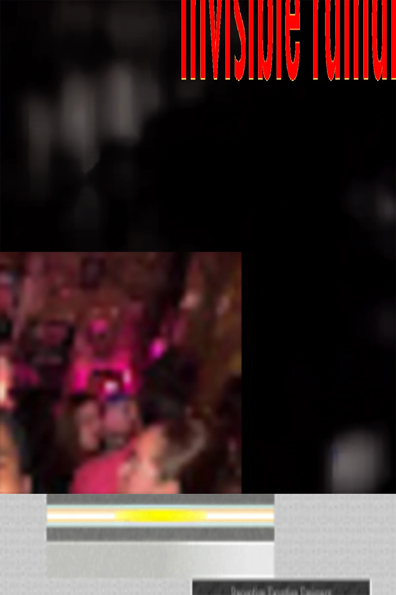

A quiet annex for the long walk, stitched to the edge of the main circuit. The air here is thinner, the notes are shorter.
Move on to signal / arrival or drift toward after-hours index once the ink dries. You can also step into the side corridor.
When you are ready, you can step back through the entry.